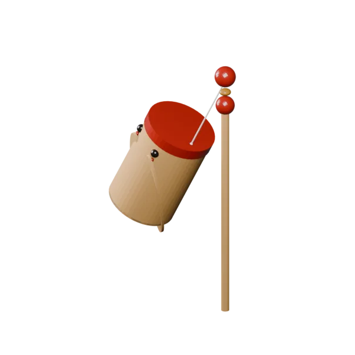
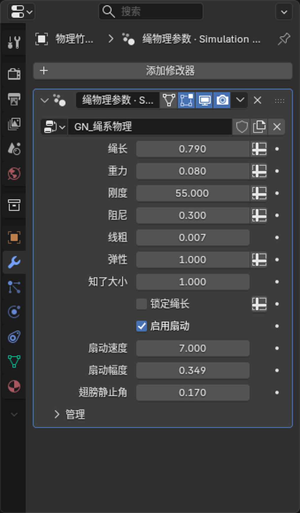
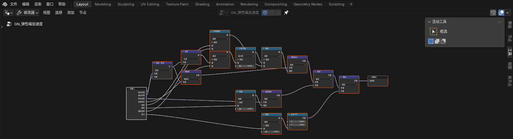
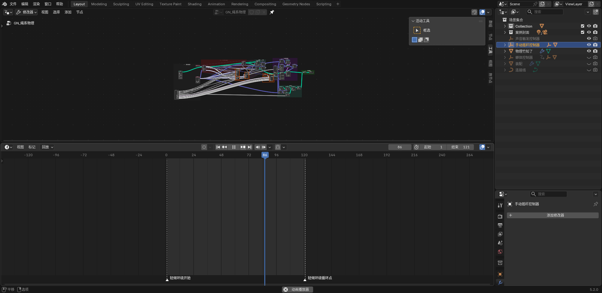

移动锚点
甩杆末端只提供动态锚点。跨帧位移形成速度，速度才会产生真正的甩动。
OPEN SOURCE · BLENDER 5.2
小时候甩着会叫的竹知了，被重新做成了一套可以拆解、调参和复用的几何节点系统。

HOW IT WORKS
甩杆末端只提供动态锚点。跨帧位移形成速度，速度才会产生真正的甩动。
Simulation Zone 记住上一帧的位置和速度，逐帧积累惯性，而不是播放一段假动画。
超过绳长才施加回拉；需要时再投影到固定半径，兼顾弹性和可控性。
声音与节点解耦。摇杆从静止进入运动时触发，持续晃动不叠音，停下后才重新待命。
THE LOOP
摇杆影响锚点，锚点影响绳子，绳子影响速度，速度决定下一帧。翅膀和声音从同一动作获得信号，却保持独立模块。
TUNE THE FEEL

LOOK INSIDE
弹性绳模块先计算锚点到质点的方向和伸长量，再把刚度、弹性倍率与阻尼组合成回拉加速度，最后叠加重力。模块只有明确的输入与一个加速度输出，因此可以脱离竹知了，在吊坠、尾巴、挂件和摆锤中复用。

REUSABLE BY DESIGN
从跨帧位置变化提取速度。
计算只拉不推的回弹作用力。
一键切换自由绳长和固定半径。
独立控制启停、速度与幅度。
识别新动作，避免连续叠音。

HOW TO USE
下载 .blend，用 Blender 5.2 或更新版本打开「物理竹知了」物体。
选中甩杆，保持 X 轴约 90°，旋转本地 Z 或给它打关键帧。
播放时间轴让 Simulation Zone 逐帧计算惯性；在修改器中调整绳长、重力、刚度、阻尼与扇动。
需要实时声音时，在文本编辑器运行一次「知了_声音触发模块」，到控制器里换音效与阈值。
REFERENCE & CREDIT
玩具主题、交互方向与物理说明参考开源展示项目 imsai-sh/zhuzhiliao ↗。本项目没有复制其真实录音或 Web 源码，Blender 模型、节点系统与声音模块均为独立实现。
参考仓库当前未提供独立 LICENSE 文件；使用其内容前请自行确认授权。